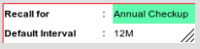
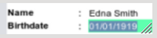
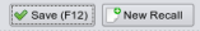
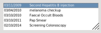

Gui objects are all those things which make up the screen you are viewing - the labels, textboxes, lists, buttons and so-on. Some objects
do nothing but sit there for example a label. Others, such as lists have behaviours which allow you to scroll up and down them, and others
such as textboxes and word processors accept data input which can be later saved by the program.
When you click on, or tab to, or arrive at by any means, an object, for example a textbox - then it 'has focus' - i.e it is the centre
of attention for the moment. So, how do you know that an object has focus?
Textboxes
Flashing cursor visible in textbox

Change of background colour - this will (later) be made configurable in EasyGP

change in background colour of the selected text
Buttons

There is usually some sort of dotted outline around buttons which have focus
Lists

The line selected will be highlighted by a (usually system wide) foreground color or 'marquee'
Change in 3D
some controls such as panels and buttons may appear: